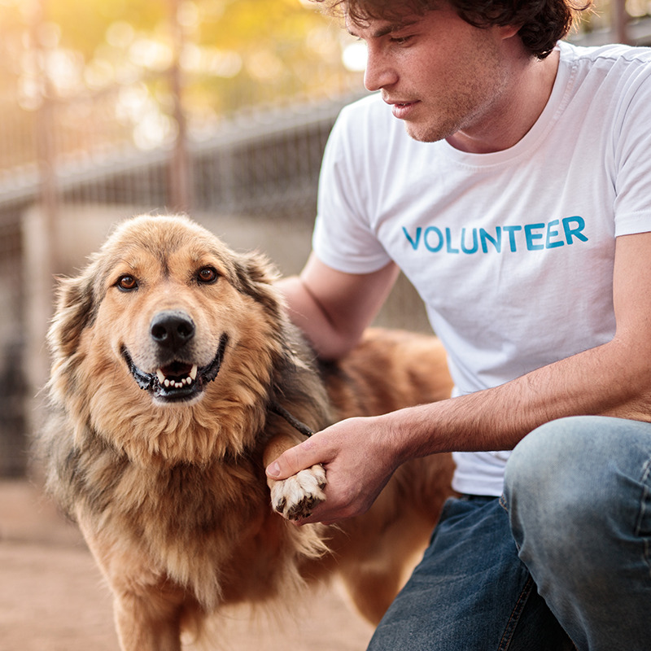

Adoption Process
Our adoption process is designed to be simple while making sure every animal is placed in a safe, lasting home. It includes a short online application, a meet and greet, and a brief home check.
- Submit an adoption inquiry through our contact form
- Meet your potential new pet at our facility
- Complete the adoption agreement and fee
- Bring your new companion home
Foster Program
Fostering gives animals a stable, home-like environment while they wait for adoption, whether that means healing from an illness, growing old enough for surgery, or simply decompressing after a hard start. Food, supplies, and veterinary care are provided by our organization for the length of the foster placement.
Volunteer Roles

Volunteers are the backbone of our organization. Roles range from hands-on animal care to community outreach, and no prior experience is required for most positions.
Not sure where to start? Click "Save this role" on any position below. We'll remember your choices and have them ready for you when you visit our Contact page.
- Dog walker and enrichment volunteer
- Cat socialization volunteer
- Adoption event greeter
- Transport driver